I spent eight rounds trying to make 3D bikepacking bags look like the real ones, and got nowhere. This is what was wrong with how I was measuring, and what happened when I fixed it.
August 10, 2026
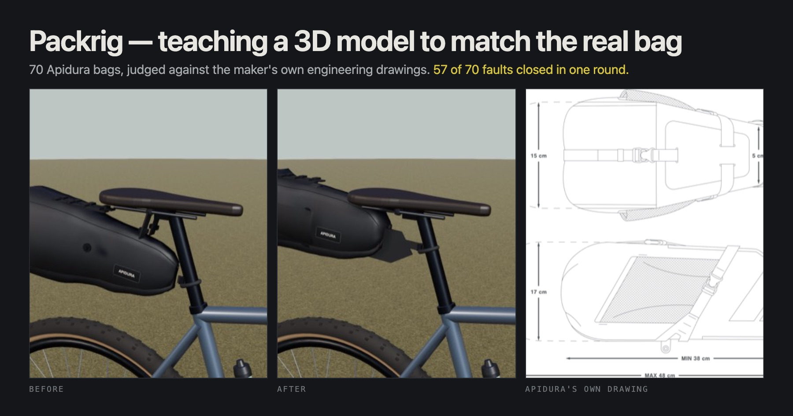
Packrig is a 3D bikepacking configurator: you choose a bike and hang real bags on it. The catalogue is 702 products across 50 brands, and none of the shapes are hand-sculpted. Thirteen small programs draw all of them from a written record of each product: dimensions, shape family, how many straps and where. One program draws all 78 seat packs in the catalogue, so a single edit improves 78 products and a single mistake is wrong 78 times. The unit of work is never "this bag", it is "this program".
I picked Apidura as the test case: 70 of the 702 products, all photographed, and I own a lot of their kit, so I can look at a render and know whether it is right. Somebody has to be the definition of correct, and here it is me.
And the bags did not look like the bags. Not subtly wrong. Wrong.
I had already run eight versions, labelled baseline through v8-glb, and the bags were not visibly better at the end. Three pieces of evidence explain why.
Seven of the eight versions changed the measuring equipment, not the bags. A scoring harness, a photo tracer, an outline comparator, a mesh exporter. None of it changed the shape of anything. Building instruments feels exactly like progress and is not.
17 of my 28 blind A/B votes were ties. Old version and new version side by side, unlabelled, and most of the time I could not tell them apart. If a human cannot perceive the difference, it is not real yet.
The automated score rated the 9 litre saddle pack 0.814 out of 1. I scored the same bag 1 and 2 out of 5. The number and my eye were not measuring the same thing, and I had been optimising the number.
One fault sits under all three: no critic had ever compared one render to one photograph and named the biggest difference. Every score measured size or outline. None measured likeness.
An eval is a frozen set of cases, a grader, and a comparison against a baseline. Mine is all 70 Apidura products, written to disk, never edited, because the easiest way to fool yourself is to quietly drop the cases you are failing. The scale is five anchored points, each with a written meaning. I report faults closed over faults found, since a mean over 70 bags drifts by a tenth of a point and hides which dimension broke. And a model grader is a stand-in for me, worthless until you know how well it tracks me. I have not yet measured that agreement for the new critics. It is the licence they are supposed to run on, and it is not issued.
The loop is four rules, and I had been breaking three. The bar is a real photograph rather than an adjective. One bag and one photo per verdict. A fresh-context critic that never sees the source. One biggest gap named and sent back, not a list of twelve.
Every finding also names a layer, because the fix lands in a different file depending on whether the record is wrong, the program is wrong, or the vocabulary cannot express what this bag is. A score of 2 tells you to look. A layer tag tells you which file to open.
First I had to admit how little evidence I held: 134 images across all 70 bags, almost all studio shots on white, because the old scraper was capped at four per product. A proper harvest of all 45 Apidura product pages brought back 989 images, three to 44 per product, median 21, all 70 SKUs, zero download failures. The point is not the count. It is that there are kinds of picture I had none of.
| Kind | Count | What it is good for |
|---|---|---|
| studio | 254 | shape and proportion, on white, several angles |
| hardware close-ups | 237 | buckles, pull tabs, straps, padding. I had none of these |
| lifestyle | 194 | how a bag sags and bulges when it is actually full |
| on-bike | 188 | the only evidence of which way round it goes and what it straps to |
| dimension diagrams | 91 | see the next section. These changed everything |
| clearance diagrams | 25 | how much room the bag needs on the bike |
Before this I had zero hardware close-ups and zero usable dimension diagrams, so I had been grading straps and buckles against nothing at all. Getting them was fiddlier than it looks: three naming quirks each silently cost a whole page's images, and the tool reported a cheerful zero every time. A scraper that finds nothing looks exactly like a page that has nothing, so coverage has to be asserted.
Buried in the harvest was the thing I should have looked for on day one. For nearly every product, Apidura publish a two-view orthographic engineering drawing: the bag from above and from the side, drawn flat, no lighting, every measurement labelled. The Expedition Saddle Pack's is built from 182 drawn paths.
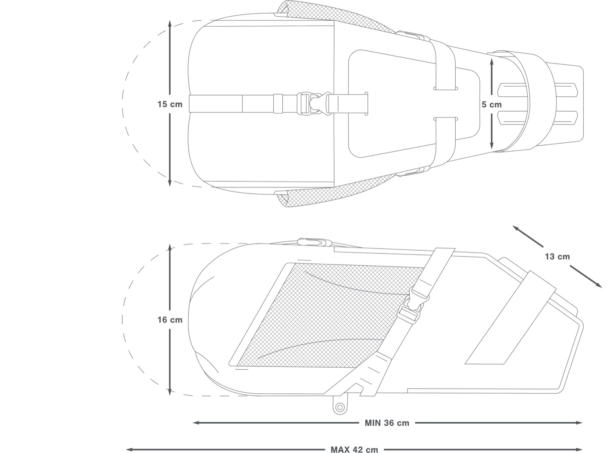
Every outline score before this had been traced off a lit photograph at an unknown angle. A drawing has no angle to guess, and it ships as vector art, so you can measure it exactly. 47 of the 70 products now take their outline from the maker's drawing, most at 90 to 99% agreement with the published dimensions. 11 refused: when a view disagrees with the published numbers by more than 25%, the tool refuses rather than guesses.
Then the argument. My notes carried an unresolved dispute about that same bag. The record said it is fattest where it meets the saddle and blades down to a narrow tail. My own spoken review said the exact opposite, and it decides the shape of 78 catalogue products. The drawing settles it in one glance, with the numbers written on it: 5 cm wide at the seatpost end, swelling rearward to 15 cm wide and 16 cm tall at a blunt rolled tail.
I was right and the written record was backwards. The flat stiffened tongue at the seatpost is broad seen from the side, so in a studio photo the mounting end looks like the fat end. It is a mistake you would make from photographs and never from the drawing. A critic agent that had seen none of that analysis reached it independently. Eight rounds of scoring could not settle a question that twenty minutes of scraping settled outright, and the wrong record survived all eight because it was plausible.
Then the loop proper. Twelve critic agents with fresh context, each seeing one program's bags: four renders, the drawing, the on-bike shots, the hardware close-ups, and the record's own claims. Each named one biggest gap per bag, scored it 1 to 5, and assigned a layer.
Not one bag of the 70 scored above 3.
| Score | Meaning | Count |
|---|---|---|
| 5 | indistinguishable | 0 |
| 4 | right product, one detail off | 0 |
| 3 | recognisable family, wrong specifics | 4 |
| 2 | right category, wrong object | 51 |
| 1 | not recognisable, or broken | 15 |
Every program had a median of 1 or 2, the honest number the 0.81-out-of-1 outline score had been hiding. The layer split was 19 records wrong, 41 programs wrong, 10 things the vocabulary cannot express. And the faults clustered, each one a sentence that moves a whole program:
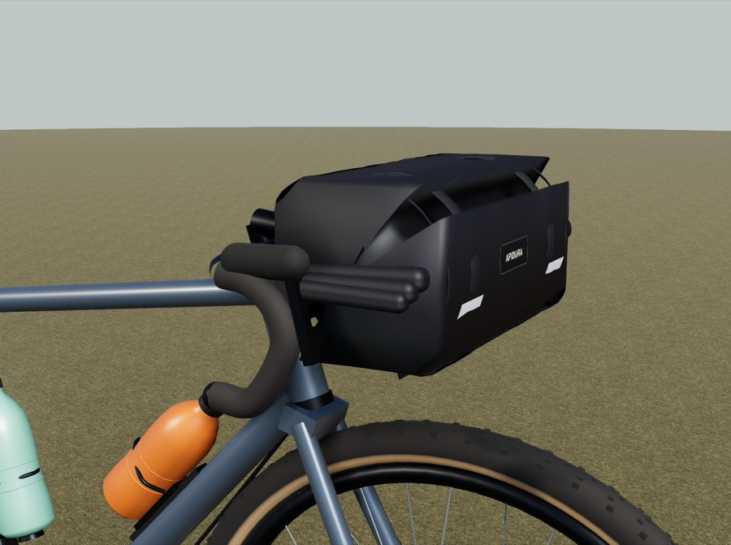
Ten fixer agents, one per program, each restricted to its own file plus the product records, and forbidden to render: ten agents launching browsers will thrash the machine. So they fixed, and I re-rendered all 70 bags in one pass, in 9 minutes 36 seconds. Six critics judged the new renders, told what round 1 had claimed and asked to verify it rather than trust it.
| Round 1 | Round 2 | |
|---|---|---|
| scored 1 (broken or unrecognisable) | 15 | 7 |
| scored 2 | 51 | 33 |
| scored 3 | 4 | 30 |
| scored 4 or 5 | 0 | 0 |
| record wrong (layer A) | 19 | 4 |
Faults closed by program: seat packs 11 of 11, half frame packs 16 of 16, top tube packs 14 of 14 on the wedge and 5 of 5 on the phantom straps, full frame packs 7 of 7 on the missing zips, 8 of 10 across the stem, down tube, fork and tool packs, and front rack packs 0 of 2. 57 of the 70 faults closed in a single round.
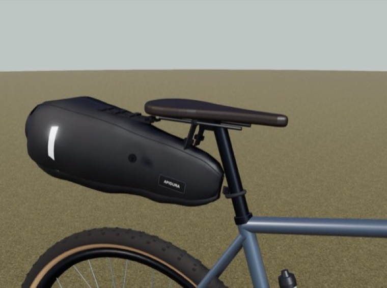
Before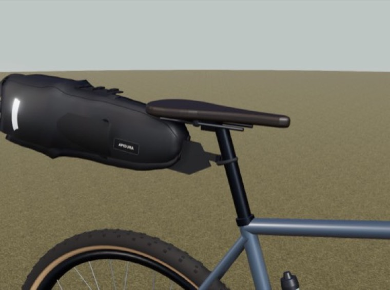
After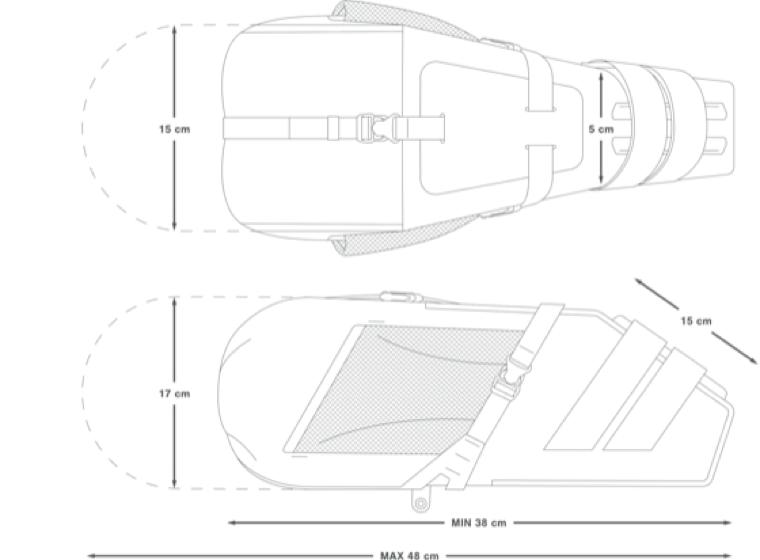
Apidura's drawing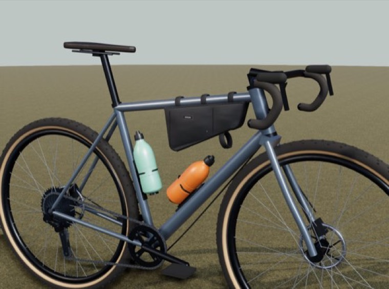
Before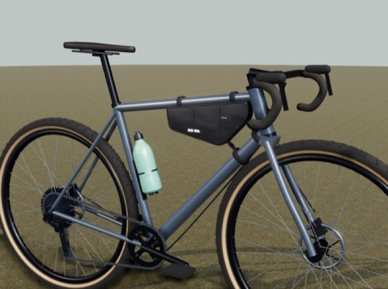
After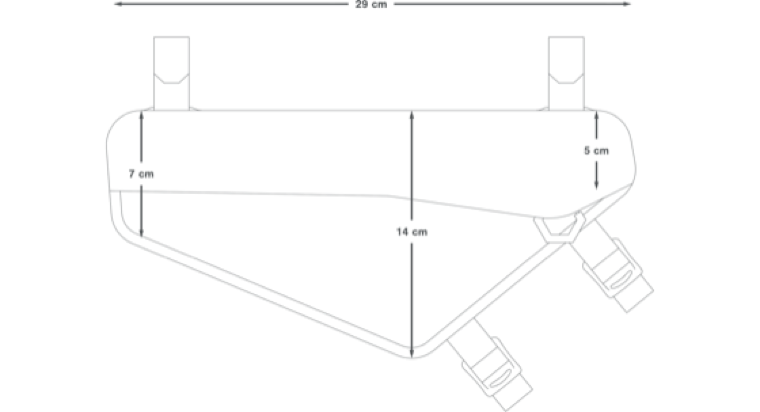
Apidura's drawing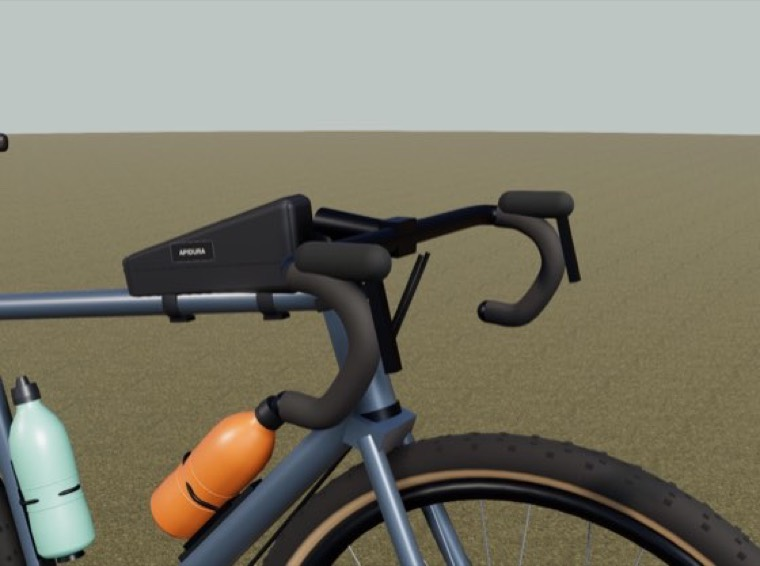
Before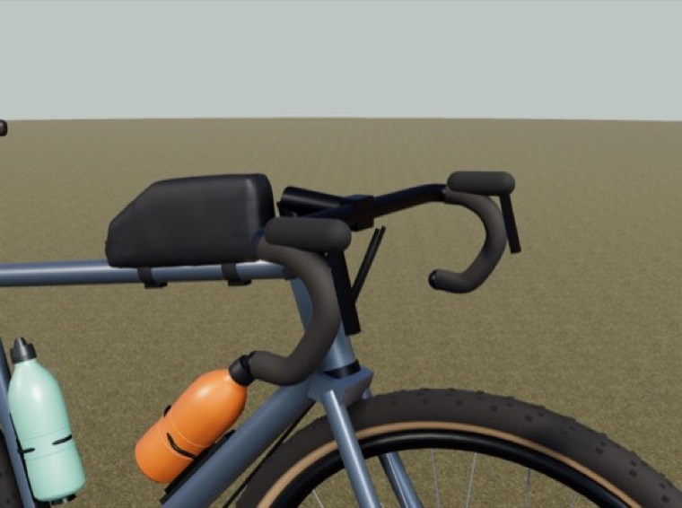
After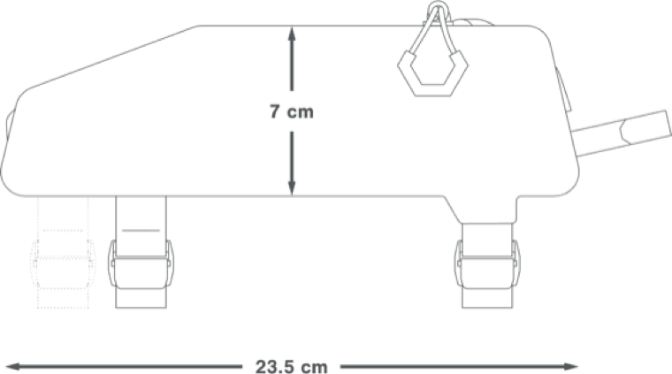
Apidura's drawing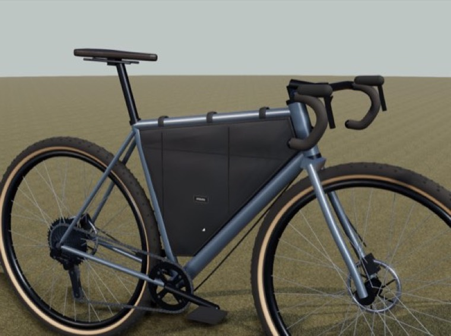
Before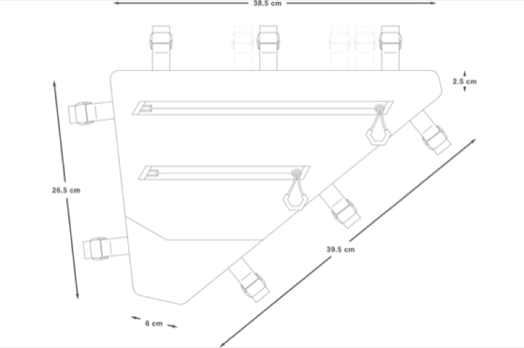
Apidura's drawingKeep it in proportion: thirty bags moved up to "recognisable family, wrong specifics", and nothing scores 4 or 5. Two fixes also made things worse, the same mistake in opposite directions.
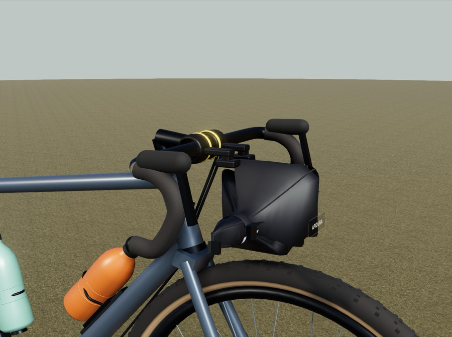
The critic had said "the bag is impaled on the bar", so the fixer moved the bag off the bar. The described fault went away. The actual fault, that nothing in the code understood this bag hangs from a bar and touches it, did not. The automated geometry gate caught it, and a critic then confirmed it independently and refused to score the fault as closed. The e-bike charger pack failed the same way inverted: its gap to the down tube closed by the bag being driven into the tube, interpenetrating it by 9.5 mm. Both fixed what a critic described rather than what was wrong.
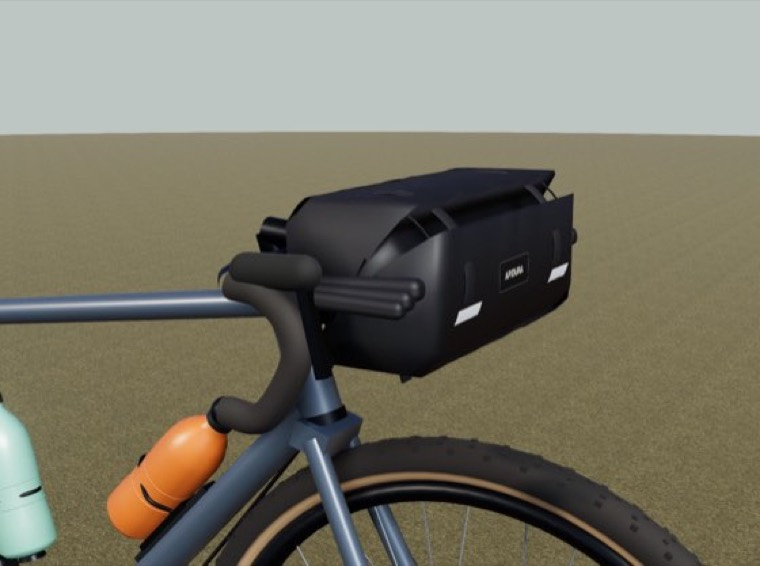
Before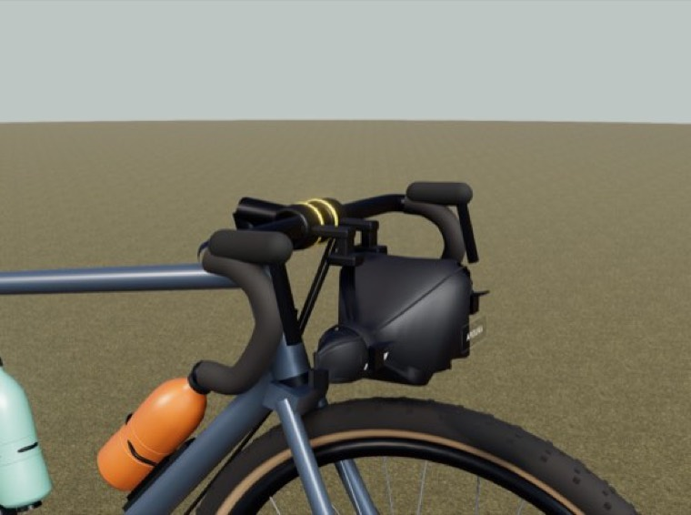
After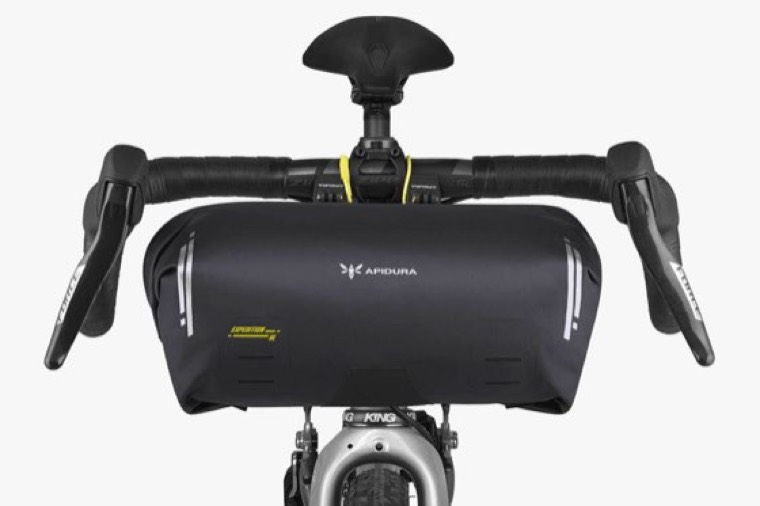
Apidura, on the bike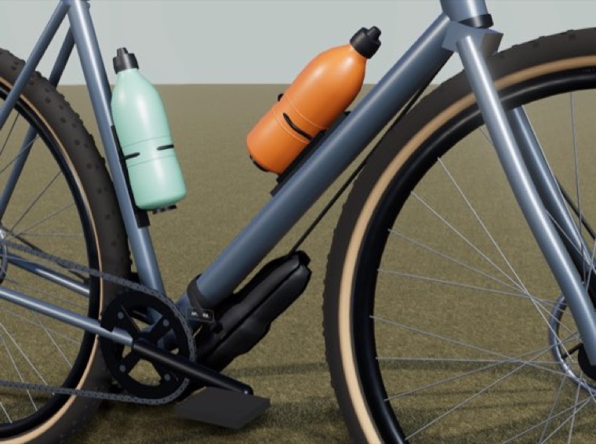
Before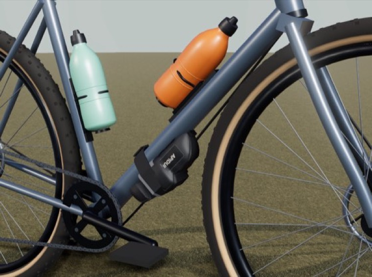
After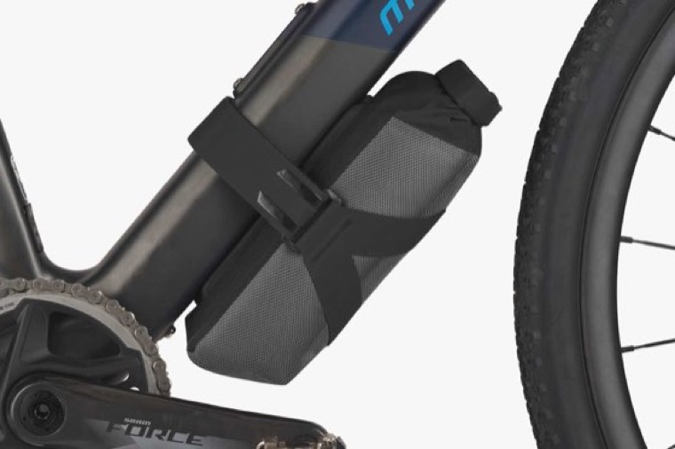
Apidura, on the bikeThen the blind spot neither critic round saw at all. Only 30 of the 70 bags are dimensionally sane, with heights 26 to 56% over on the frame packs and top tube packs. Two rounds of critics looking hard at these bags against the maker's own dimensioned drawings, and not one mentioned size. They were judging shape against drawings, not size against numbers. The programmatic gates caught all of it:
| Gate | Passing |
|---|---|
| bag placed on the bike at all | 70 / 70 |
| no tyre contact | 70 / 70 |
| no clash with the frame | 69 / 70 |
| attached to what it should be attached to | 65 / 70 |
| size sane against published dimensions | 30 / 70 |
Against round 1 the gates scored 17 improved, 11 regressed, 42 unchanged. Counting the regressions by name is not optional: a mean can rise while a fifth of the set gets worse. Two graders, two blind spots, and they do not overlap. The critics cannot see size. The gates cannot see whether a bag looks like the product. Running both is the only reason either is trustworthy.
The failures specify the next round: re-attach the bar rolls without re-impaling them, bring the sizes back to the published dimensions, then the faults that only became visible once shape stopped dominating. What this does not show, because a write-up like this drifts optimistic by default:
The thing I would take to another project has nothing to do with bags. I spent eight rounds building better instruments for a question I had never asked, and the instruments all agreed with each other and none of them agreed with me. The fix was not a better metric. It was putting one render next to one photograph and making something say what was wrong with it.